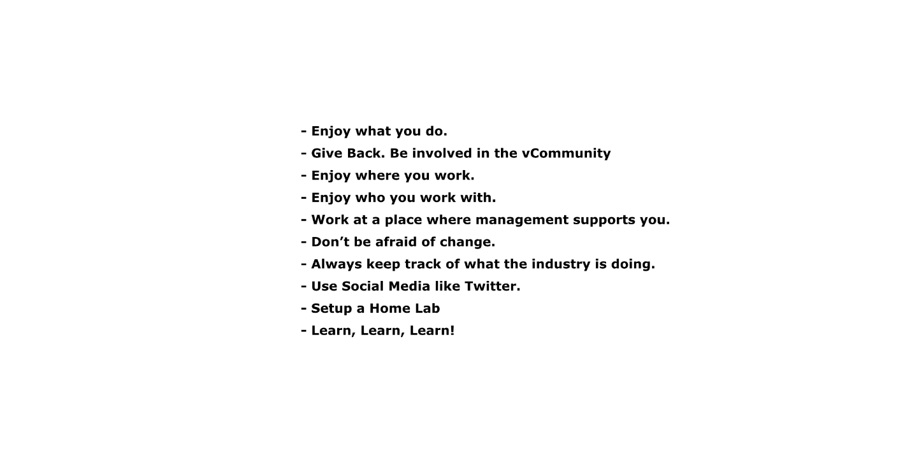
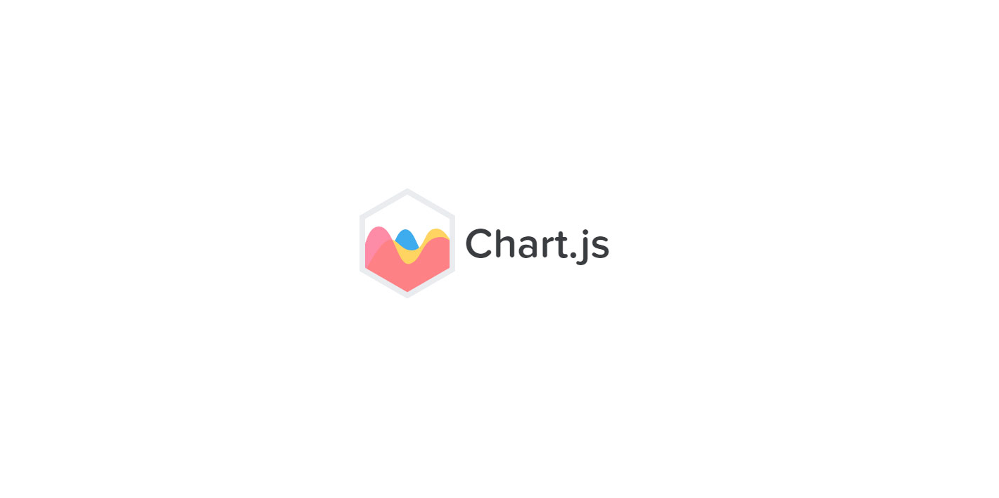
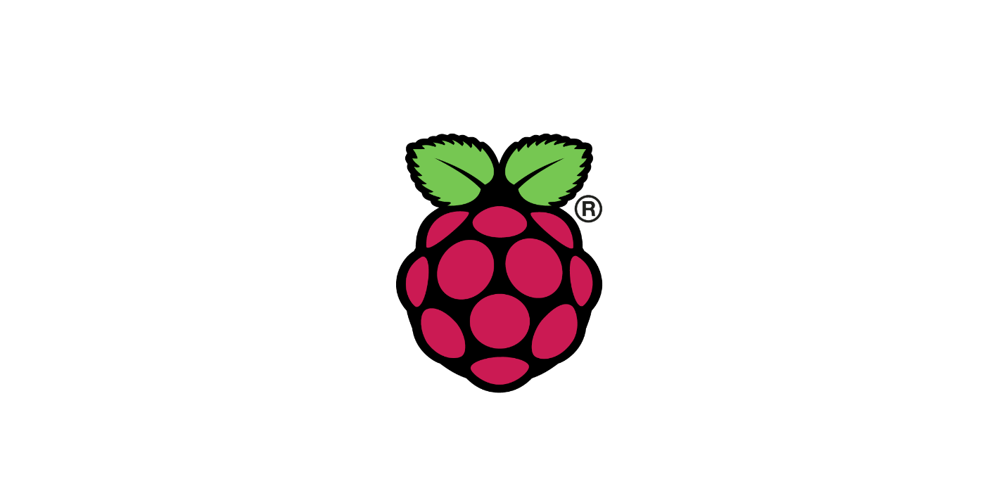
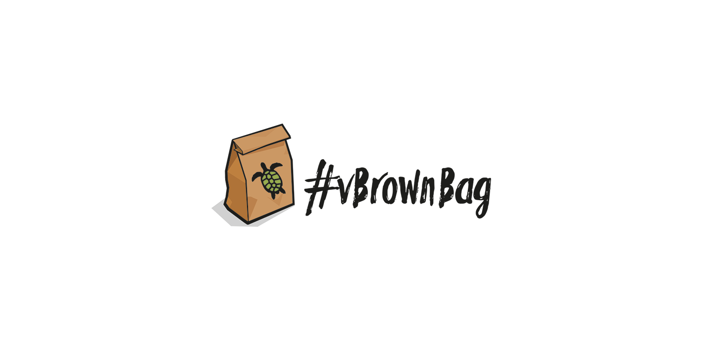
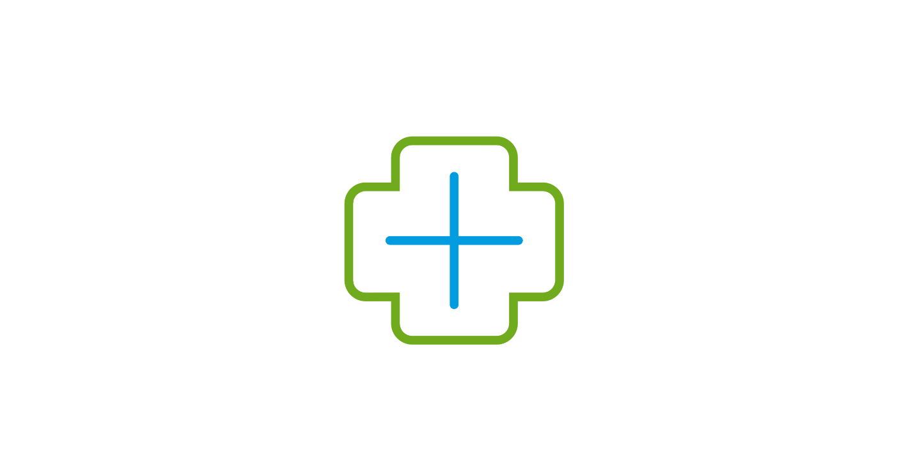

How vRealize Operations can help with Right Sizing VMs
May 15, 2021
• by Dale Hassinger
VCF Operations
#vROPS
#Monitoring
#vRealize Operations
#Right Size
#Optimize
#Performance
#Dashboard
#Tip and Tricks
#VMware Aria
Automating Automation (Updated)
April 29, 2021
• by Dale Hassinger
VCF Automation
#vRO
#vRealize Orchestrator
#vRA
#vRealize Automation
#API
#PowerShell
#Automation
Open Ports | Zero Trust
April 24, 2021
• by Dale Hassinger
VCF Automation
#PowerShell
#PowerCLI
#NSX
#Zero Trust
vRealize Operations 8.x - New Features
February 20, 2021
• by Dale Hassinger
VCF Operations
#VCF Operations
How to use PowerShell Modules with vRA 8.2
January 18, 2021
• by Dale Hassinger
VCF Automation
#PowerShell
#vRA
#ABX
#vRealize Automation
#VMware Aria

How to be successful with VMware vRealize Products in your environment
January 15, 2021
• by Dale Hassinger
VMware Community
#vExpert 2021
#VMware
#vRealize Automation
#vRealize Operations
#vRealize
#Salt
#SaltStack Config
#PowerShell
#Goals
#Career
#Training

Creating Charts with ChartJS and displaying in vRealize Operations
January 3, 2021
• by Dale Hassinger
VCF Operations
#ChartJS
#Citrix
#vRealize Operations
#Dashboard
#vROPS
#VMware Aria

ESXi on Raspberry PI
October 11, 2020
• by Dale Hassinger
VMware vCenter
#Raspberry PI

vBrownbag VMworld Presentation
October 1, 2020
• by Dale Hassinger
VMware Community
#vBrownbag
#vRealize Operations
#vROPS
#VMworld
#Podcast
#Dashboard

Text Display Widget - More Powerful than just displaying text on a Dashboard...
July 17, 2020
• by Dale Hassinger
VCF Operations
#vROPS
#vRealize Operations
#Dashboard
#Tip and Tricks
#VMware Aria
« Newer Posts
Page 11 of 12
Older Posts »
↑